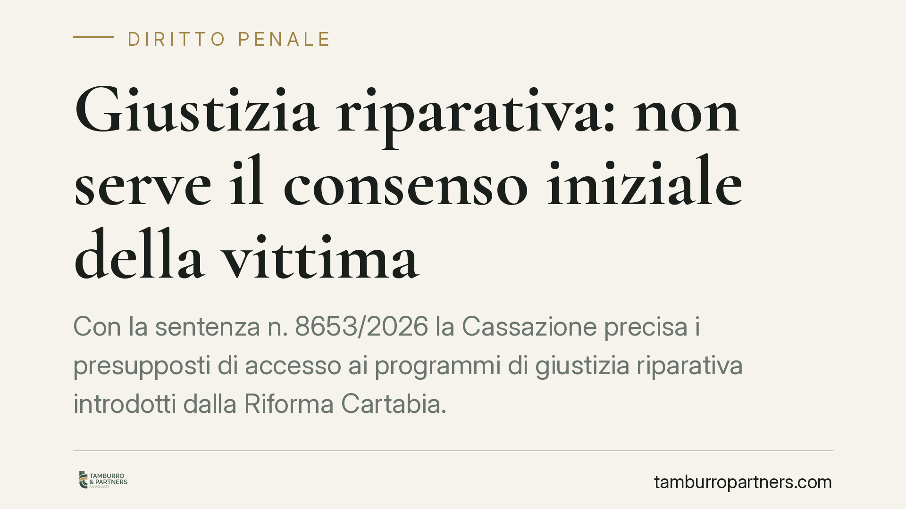

Giustizia riparativa: non serve il consenso iniziale della vittima
Con la sentenza n. 8653/2026 la Cassazione precisa i presupposti di accesso ai programmi di giustizia riparativa introdotti dalla Riforma Cartabia. Non occorrono né il consenso iniziale della vittima né un'ammissione di responsabilità dell'imputato. Due sole cause ostative. Una lettura che incide direttamente sulle strategie difensive e sulla tutela della persona offesa.

Il fatto
La Corte di Cassazione, con la sentenza n. 8653/2026, è intervenuta su una questione che divideva gli operatori: per avviare un programma di giustizia riparativa è necessario che la vittima presti il proprio consenso fin dall'inizio? E l'imputato deve prima ammettere la propria colpa?
La risposta della Corte è netta su entrambi i fronti: no. L'accesso ai programmi non è subordinato a questi due presupposti. La valutazione del giudice deve fermarsi su un perimetro ben più ristretto.
Inquadramento normativo
La giustizia riparativa è disciplinata dal D.lgs. 150/2022, la cosiddetta Riforma Cartabia, che ha dato organicità a uno strumento prima frammentario. Si tratta di un percorso in cui l'autore del reato e la vittima, con l'ausilio di mediatori terzi e imparziali, possono partecipare a un dialogo finalizzato al riconoscimento reciproco e, dove possibile, alla riparazione delle conseguenze del fatto.
È importante chiarire un punto spesso frainteso: la giustizia riparativa non sostituisce il processo penale e non è una forma di "sconto" automatico della pena. È un percorso parallelo, su base volontaria, il cui esito positivo può essere valutato dal giudice ma non ne condiziona l'avvio.
La Cassazione individua due sole cause ostative all'accesso:
- il pericolo concreto per l'accertamento dei fatti, cioè il rischio che il programma interferisca con l'istruttoria e la ricostruzione della vicenda processuale;
- il rischio di grave destabilizzazione della vittima, ossia la possibilità che il confronto produca un danno ulteriore alla persona offesa.
Al di fuori di queste due ipotesi, il giudice non può negare l'accesso adducendo la mancanza del consenso iniziale della vittima o l'assenza di un'ammissione di colpa dell'imputato.
Perché il consenso iniziale non è richiesto
Il ragionamento della Corte muove dalla natura stessa del percorso. Il consenso della vittima è un elemento essenziale per lo *svolgimento* del programma, non per la sua *attivazione*. La persona offesa resta sempre libera di non aderire o di interrompere il dialogo: la volontarietà è garantita in ogni fase.
Imporre il consenso come condizione preliminare avrebbe svuotato lo strumento, attribuendo di fatto alla vittima un potere di veto sull'accesso stesso. La disponibilità al confronto, invece, può maturare nel corso del tempo e con l'intervento dei mediatori.
Quanto all'ammissione di colpa, pretenderla in fase di accesso sarebbe entrato in frizione con la presunzione di innocenza e con il diritto di difesa. L'imputato può partecipare al percorso senza che ciò equivalga a una confessione spendibile nel processo.
Implicazioni pratiche
Per l'imputato si apre uno spazio di accesso più ampio: la partecipazione a un programma riparativo non richiede rinunce preventive sul piano probatorio. Resta però fondamentale valutare con il difensore gli effetti del percorso, anche perché l'esito può essere apprezzato dal giudice ai fini della pena.
Per la vittima la sentenza non comporta alcuna compressione delle garanzie: la sua adesione resta libera e revocabile. La tutela si sposta dal momento dell'accesso a quello dello svolgimento, dove la causa ostativa della "grave destabilizzazione" opera come filtro protettivo.
Per la parte civile e per i difensori cambia l'approccio strategico: occorre ragionare sulla giustizia riparativa come opzione concreta anche in assenza di posizioni già consolidate tra le parti.
Cosa fare in concreto
- Valutate l'accesso con il difensore prima di escluderlo per la presunta indisponibilità della controparte: non è un ostacolo di per sé.
- Documentate l'eventuale rischio di destabilizzazione della vittima con elementi concreti, se si intende contestare l'avvio del programma.
- Verificate l'impatto sull'istruttoria: se il percorso può interferire con l'accertamento dei fatti, segnalatelo tempestivamente al giudice.
- Chiarite all'imputato che la partecipazione non equivale ad ammissione di colpa, ma che l'esito può rilevare in sede di determinazione della pena.
- Tenete traccia della volontarietà di ogni fase, perché il consenso della persona offesa resta sempre revocabile.
Disclaimer
Contributo informativo a cura di Tamburro & Partners - Avv. Giuseppe Tamburro. Non costituisce parere legale.
Ogni condominio ha una storia a sé.
Se gestisci un'amministrazione e vuoi un confronto su una specifica questione condominiale, scrivi allo studio. Ti rispondiamo entro un giorno lavorativo.